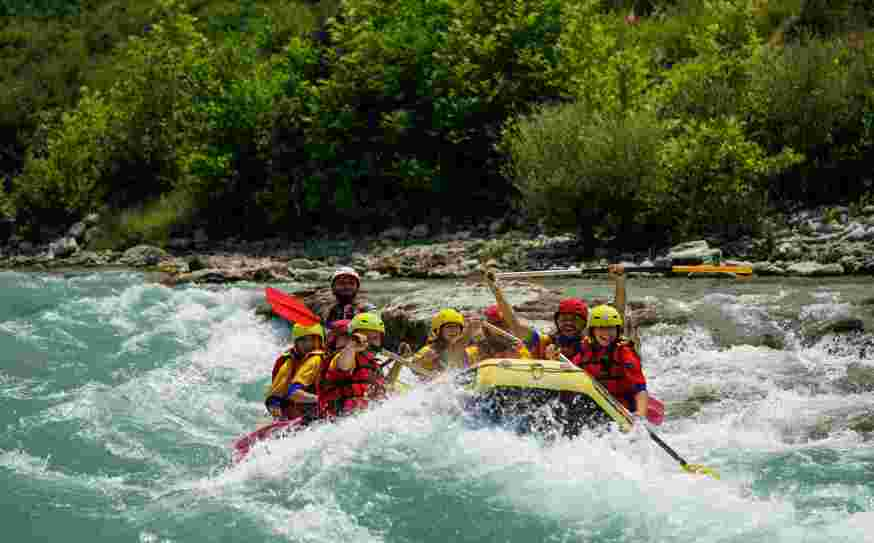
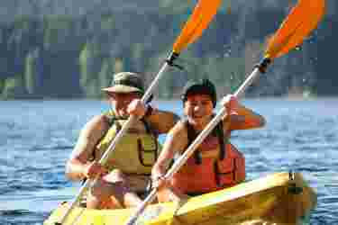

At White Water Rafting Co., we believe adventure is the best therapy. Our mission is simple: to reconnect people with nature, build unforgettable memories, and ride every rapid with purpose. Whether you’re a first-timer or a seasoned paddler, our guides are here to give you a safe, thrilling, and unforgettable journey.


White Water Rafting Co.
History
Founded in 2005 by three outdoor enthusiasts with a passion for rivers, White Water Rafting Co. started as a small guide service in the heart of Colorado. Over the years, we’ve grown into one of the region’s most trusted rafting providers—serving thousands of happy adventurers every year. What began as weekend trips with friends has turned into a full-scale operation powered by a deep love of wild water and wilderness.